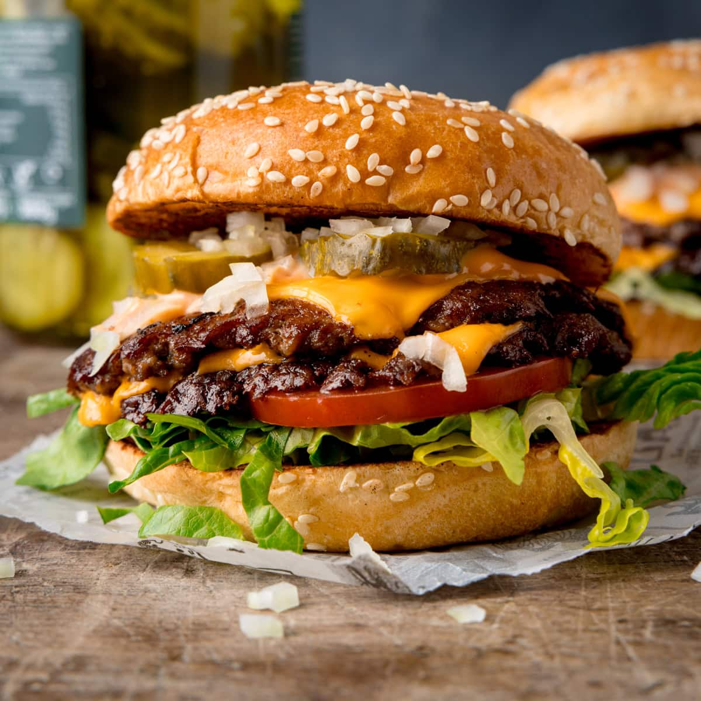

Home
Smash Burger

Description
A juicy Smash Burger recipe
Ingredients
- 1 1/4 pounds ground chuck
- 1/2 teaspoon freshly ground black pepper
- 1/2 teaspoon garlic powder
- 1/2 teaspoon onion powder
- 1/2 teaspoon ground mustard
- 1 teaspoon Worcestershire sauce
- 1/2 tablespoon vegetable oil, for cooking
- Heaping 3/4 teaspoon kosher salt
- 4 slices Cheddar cheese
- 4 hamburger buns (lightly toasted, if desired)
- Burger toppings of choice
Steps
- Prepare the meat: In a large bowl, combine
the beef, pepper, garlic powder, onion powder, ground mustard,
and Worcestershire sauce. (Do not put the salt in the mixture;
you’ll add it later.) Using your hands, mix until evenly
combined. Form the meat into 4 large meatballs (about 4 1/2 oz
each), then pat each ball into a 1-inch-thick disc; smooth out
the edges as best you can. Refrigerate for at least 15 minutes
or until ready to cook (up to 24 hours, covered)
- Cook the meat: Turn on your exhaust fan and
heat a 12-inch cast-iron or nonstick skillet over medium-high
heat. Remove the patties from the fridge and season all over with
the salt. Coat the hot pan evenly with the oil. Place the burgers
on the skillet one at a time, firmly smashing them flat with a
metal spatula until about ¼-inch thick before adding and smashing
the next one. Let cook for about 2 minutes until nicely browned
and crusty on the bottom. Flip the burgers and top with the
cheese; cook for about 2 minutes more for medium-rare to medium
burgers, or 3 minutes for medium to medium-well burgers. Place
the burgers on the buns and serve with toppings of choice.